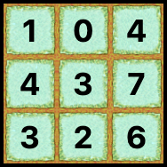
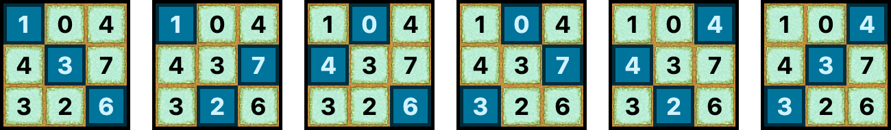
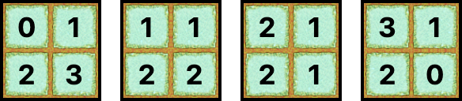

The city of Bogor is known as the rain city because of its high frequency of rain. Therefore, Pak Dengklek has an idea to plant magical plants that sprout when exposed to rain.
Pak Dengklek's field is in the shape of a square that contains $N \times N$ tiles, with $N$ rows (numbered from $1$ to $N$) and $N$ columns (numbered from $1$ to $N$). The tile located in the $i$-th row and the $j$-th column is notated as tile $(i, j)$. For each tile, Pak Dengklek can choose to plant zero or more magical plant seeds in that tile.
However, there is a matrix $A$ of size $N \times N$ that denotes the following constraints:
The rain that can happen in Pak Dengklek's field has a unique property. It will rain on exactly $N$ tiles that satisfy the two following conditions:
Although the conditions above are known, the exact tiles that get rained on are not known.
If it rains, then all seeds that are planted in the tiles which get rained on will sprout and become mature plants.
Pak Dengklek wants to plant the magical plant seeds so that no matter how the rain rains on the field, the total number of seeds that sprout and become mature plants will always be the same.
Calculate the number of different ways Pak Dengklek can plant the seeds!
Since the answer can be very big, output the answer modulo $1\,000\,000\,007$.
Of course, if there is no way to plant the seeds that satisfies the condition, the number of ways is $0$.
In particular, if there is an infinite number of different ways, output -1.
Note: two ways of planting are considered different if and only if there is at least one tile $(i, j)$ that is planted with different numbers of seeds in the two ways.
The input is given with the following format:
N A1,1 A1,2 … A1,N A2,1 A2,2 … A2,N ︙ ⋱ ︙ AN,1 AN,2 … AN,N
Output a single line containing an integer representing the number of different ways Pak Dengklek can plant the seeds that satisfy the condition, modulo $1\,000\,000\,007$.
If there is an infinite number of different ways, output -1.
3 -1 0 -1 4 -1 7 3 -1 -1
4
The following is one of the ways to plant the seeds that satisfies the condition.

The rain can rain on the field in $6$ different ways. If Pak Dengklek plants the seeds following the illustration above, no matter how the rain rains on the field, the total number of seeds that sprout and become mature plants is always $10$.

2 -1 1 2 -1
4
The following are $4$ different ways to plant the seeds that satisfy the condition.

2 -1 -1 -1 -1
-1
There is an infinite number of different ways that satisfy the condition, so you need to output -1.
2 2 6 5 265
0
There is no way to plant the seeds that satisfies the condition.